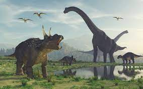

Los dinosaurios son un grupo de saurópsidos que aparecieron durante el período Triásico.
Aunque el origen exacto y su diversificación temprana es tema de activa investigación,
el consenso científico actual sitúa su origen entre 231 y 243 millones de años atrás.
Algunos caminaban en dos patas, y otros en cuatro patas.
Los primeros fósiles de dinosaurios fueron encontrados a principios del siglo XIX.
La palabra “dinosaurio” viene del griego “deinos” (terrible) y “sauros” (lagartija).
Los pájaros actuales evolucionaron de los dinosaurios.
